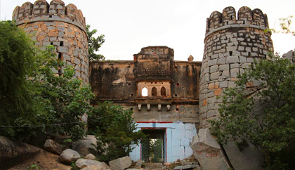

Anegundi, Karnataka The fascinating legends behind the birth of this village date back to the time of the epic Ramayana. Anegundi in the Koppal district of Karnataka is believed to have been the kingdom of monkeys or Kishkintha and is older than Hampi. Located on the banks of river Tungabhadra, the rocky plateau has many historic sites, temples, tanks and scenic beauty that is waiting to be explored. Club the attractions with the engaging local tales and you are sure to have a journey you will never forget.

Mail your local guide